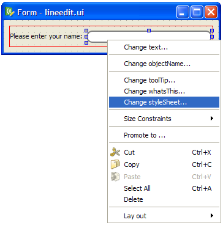
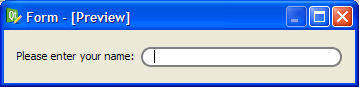

Using Stylesheets with Qt Designer
Since Qt 4.2, it is possible to edit stylesheets in Qt Designer with the stylesheet editor.
|  Setting a Stylesheet The stylesheet editor can be accessed by right-clicking a widget and selecting Change styleSheet... |
|  |